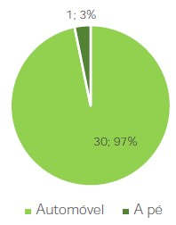

Inquérito à mobilidade dos funcionários dos municípios de Aveiro
11. Nessas deslocações, qual o meio de transporte preferencial que utiliza?

O automóvel revela-se imperativo nesta questão (Figura 29), visto que a 97% dos participantes que realizam viagens em serviço utiliza este meio de transporte. Não é, de todo, fora de comum visto que alguns Municípios disponibilizam carros de serviço para este tipo de deslocações. Só um utilizador referiu que se desloca a pé na deslocação em serviço.